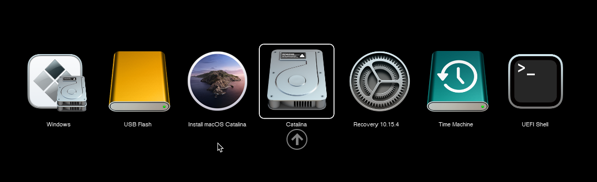

TreeviewCopyright © aleen42 all right reserved, powered by aleen42
美化OpenCore Bootloader界面以及开机声音
OpenCore在缺省的条件下，Bootloader界面就是linux的grub差不多，是一个文本选择界面，感觉和整体的MacOS高大上的UI设计非常的不搭，而且如果使用U盘重新安装MacOS在Bootloader界面也是非常美观的，今天我们就要做一个类似的界面
视频
设置OpenCore的GUI可视化主题
这个官方也是有文档的，具体的也可以参考官方文档
系统必须是0.5.7版本及以上，只有这些版本才会提供GUI所需的文件。如果你是一个老的版本，请先更新一下系统。
必要的文件
- Binnary Resources
- OpenCanopy.efi
- OpenCanopy.efi必须是和你的opencorepkg来自于同一个版本
使用opencore configurator把EFI分区Mount进来
- 把Resources目录 COPY到 EFI/OC 目录下
- 把OpenCannopy.efi COPY到 EFI/OC/Drivers 目录下
再编辑一下config.plist
- Misc -> Boot -> PickerMode: External
- Misc -> Boot -> PickerAttributes: 17
- 这个会启用鼠标/触控板
- Misc -> Boot -> PickerVariant: Modern
参数意义
- Auto — 自动选择一个
- Default — Normal icon set.
- Modern — Nouveau icon set.
- Old — Vintage icon set.
如果使用Opencore Configurator请参考下面
- UEFI -> Drivers and add OpenCanopy.efi
PickerVariant:参数
- default:

- modern 
- old
使用AudioDxe设置启动声音
- 机载音频输出
- USB DACs声卡是无法使用的
- GPU音频输出有可能会出错
- AudioDxe.efi COPY到 EFI/OC/Drivers 目录 并设置好 UEFI -> Drivers
- Banary Reources 点击下载
- 把Resources目录 COPY至 EFI/OC, 和上面gui的部分类似
- 对于空间比较小的，可以在Audio文件夹里只保留 OCEFIAudio_VoiceOver_Boot.wav , 这个文件应该是真实的Mac开机音效:)
设置NVRAM (config.plist)
- NVRAM -> Add -> 7C436110-AB2A-4BBB-A880-FE41995C9F82:
- SystemAudioVolume | Data | 0x46
- 这是启动时和屏幕读取器的音量，注意它是十六进制的，所以十进制会变成70
设置 UEFI -> Audio (config.plist)
- AudioCodec音频编解码器： 找到
- 检查IORegistryExplorer- > HDEF-> AppleHDAController-> IOHDACodecDevice并查看IOHDACodecAddress属性
例如： 0x0
- 也可以通过终端进行检查（注意是否显示多个，请使用供应商ID查找正确的设备）l：
ioreg -rxn IOHDACodecDevice | grep VendorID // 列出所有可能的设备ioreg -rxn IOHDACodecDevice | grep IOHDACodecAddress //定位编解码器地址
- 也可以通过终端进行检查（注意是否显示多个，请使用供应商ID查找正确的设备）l：
Audio Device音频设备地址：
- 音频控制器的PciRoot
- 方式一：运行Hackintool.app-> PCIe-> Audio device 设备地址-> 如PciRoot(0x0)/Pci(0x1F,0x3)
- 方式二：运行gfxutil查找路径：
- /path/to/gfxutil -f HDEF
- 例如： PciRoot(0x0)/Pci(0x1f,0x3)
AudioOut音频输出：
- 音频控制器的特定输出，找到正确音频输出的最简单方法是：每个音频输出（从0到N-1）都试一遍，通常大部分情况为0
- 例如： 5个输出作为0-4的值
- 你也可以在OpenCore调试日志中找到所有编解码器
06:065 00:004 OCAU: Matching PciRoot(0x0)/Pci(0x1F,0x3)/VenMsg(A9003FEB-D806-41DB-A491-5405FEEF46C3,00000000)... 06:070 00:005 OCAU: 1/2 PciRoot(0x0)/Pci(0x1F,0x3)/VenMsg(A9003FEB-D806-41DB-A491-5405FEEF46C3,00000000) (5 outputs) - Success
- AudioSupport
- 设置为True
- MinimumVolume
- 音量等级从0到100
- 扬声器不至于爆音的情况，请将其设置为 70
- 注意，如果MinimumVolume高于SystemAudioVolume我们在本NVRAM节中设置的值，boot-chime将不会播放
- PlayChime
- 设置 True
- SetupDelay
- 用缺省值0
- 一些编解码器可能需要额外的时间进行设置，如果您遇到问题，建议将其设置为500000（0.5秒）
- VolumeAmplifier音量在原有基础上放的百分比,有效范围 0 ~ 1000：（可使用默认值0）
- 音量放大值取决于您的编解码器
- 公式如下
- （SystemAudioVolume * VolumeAmplifier）/ 100 =原始音量（但不能超过100）
- 例如：（70x VolumeAmplifier）/ 100= 100 ->（100x 100）/ 70= VolumeAmplifier = 142.9（143为简单起见，我们将其四舍五入）
Notice for 视力障碍人士
- 使用AudioDxe设置，您可以通过以下两个设置启用选择器音频和FileVault VoiceOver：
- Misc -> Boot -> PickerAudioAssist -> True/YES 启用选择器音频
- UEFI -> ProtocolOverrides -> AppleAudio -> True/YES 启用FileVault语音
很娘的，适合女性的主题
- https://github.com/Fairy-Plus/OpenCoretheme
- 确实不敢改成这样子，不过我的世界倒是可以的